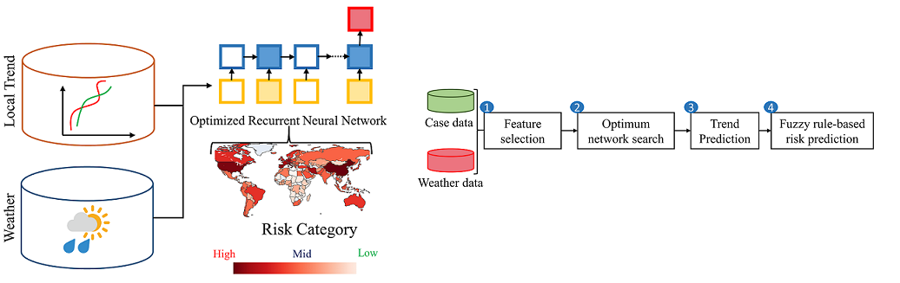

The recent worldwide outbreak of the novel corona-virus (COVID-19) opened up new challenges to the research community. Artificial intelligence (AI) driven methods can be useful to predict the parameters, risks, and effects of such an epidemic. Such predictions can be helpful to control and prevent the spread of such diseases. The main challenges of applying AI is the small volume of data and the uncertain nature. Here, we propose a shallow Long short-term memory (LSTM) based neural network to predict the risk category of a country. We have used a Bayesian optimization framework to optimized and automatically design country-specific networks. We have combined the trend data and weather data together for the prediction. The results show that the proposed pipeline outperforms against state-of-the-art methods for 170 countries data and can be a useful tool for such risk categorization. The tool can be used to predict long-duration outbreak of such an epidemic such that we can take preventive steps earlier.
Neural network based country wise risk prediction of COVID-19
R. Pal, A. Ahmed, S. Kar, and D. K. Prasad
skarifahmed at gmail.com
UiT The Arctic University of Norway
Tromsø
Norway